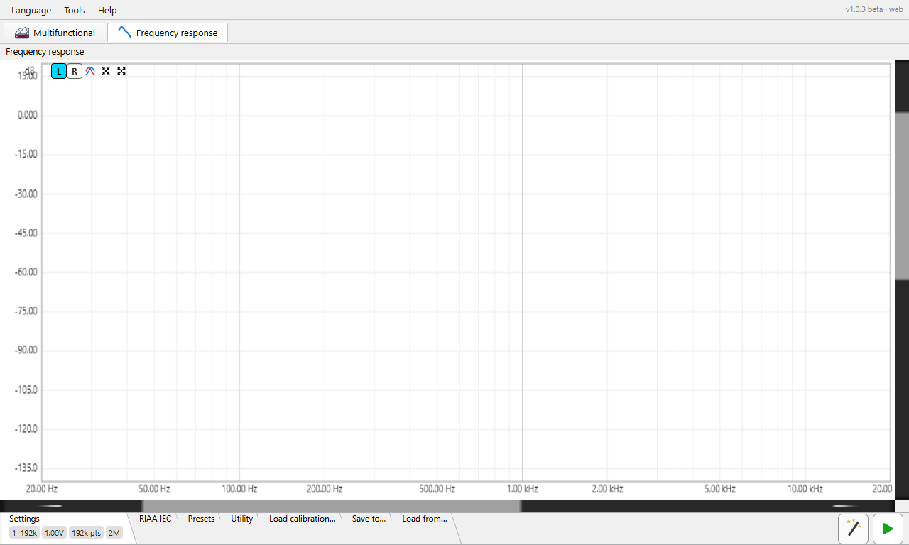

This page covers the frequency-response analyser's controls. For how it measures — a pre-rendered logarithmic sweep, deconvolved against the played reference to recover magnitude and phase across the whole band in one pass — see Theory of operation ▸ Frequency response and the log-sweep (Farina) summary.
Frequency response is a separate top-level tab (next to the combined Generator / Oscilloscope / FFT tab). It plays one swept sine from the output device, captures the return at the input, and plots the measured magnitude (and optional phase) of the device under test versus frequency — with an optional RIAA / IEC reference overlay and a measured-minus-reference compare curve for phono and filter work.

.frc /
CSV correction files to subtract a known interface response from the
measurement. Load calibration
tab.The button row sits above the plot.
| Button | Action |
|---|---|
| L (cyan) | Show the left channel's magnitude. Mutually exclusive with R — picking one hides the other. |
| R (yellow) | Show the right channel's magnitude. |
| Phase | Show / hide the phase trace and its right-hand ±180° axis. |
| Auto-setup | Fit the vertical (magnitude) window to the visible trace, leaving a little headroom above the highest point. Frequency span is left as-is. |
| Maximize | Reset to the default view — full frequency span (1 Hz to the Nyquist fraction) and +20 … −150 dB vertically. |
| Detach readout (toggle) | Move the measurement readout (the compare max/min figures and the Unevenness flatness line) out of the plot corner and into a small separate window. Click again, or close the window, to dock it back. It has no effect until there is a measurement to report. See Measurement readout. |
| Wizard | Open the guided calibration wizard, which first measures the DAC → ADC loopback and then the filter under test, in sequence. (This button and Play sit on the toolbar row beside the settings tabs, not on the plot header bar.) |
| Play (green) | Start a measurement sweep; while one runs the tooltip changes to "stop" and a progress dialog appears (see Running a measurement). |
Over the plot — wheel: pan the magnitude (vertical) axis; Shift+wheel: pan the frequency (horizontal) axis; Ctrl+wheel: zoom the magnitude axis (wheel up = zoom in); Ctrl+Shift+wheel: zoom the frequency axis (wheel up = zoom in). Both zooms are anchored at the cursor — the value (dB, or frequency) under the pointer stays fixed while the scale changes around it. This is the same convention used in the scope and FFT views. Each scrollbar pans one axis only — never zooms — and its thumb is sized by the view, so it tracks the zoom (it grows / shrinks as you scale). Click the empty track to page toward the pointer, or hold the button down to keep paging until the thumb reaches the cursor.
Rectangle zoom. Drag with the left mouse button inside the plot to draw a rubber-band rectangle; on release the selected region stretches to fill the view — frequency and magnitude zoom together in one gesture. Selections smaller than 8 pixels in either direction are ignored, so a stray click doesn't zoom. The drag must start inside the plot area (not on the axis labels), and the result stays clamped to the plot's limits (1 Hz up to the Nyquist fraction horizontally). The same gesture works in the scope and FFT views.
Ctrl+Z — step back. Every rectangle zoom remembers the window it replaced; press Ctrl+Z (exactly Ctrl — Ctrl+Shift+Z and other combinations are ignored) to step back through up to 32 previous windows per view. Wheel pan / zoom is not recorded — only rectangle zooms add steps. Ctrl+Z acts on the view that has keyboard focus (click a plot to focus it) or, when no view is focused, the one under the pointer; the targeted view is marked by a thin bright-green border around its edge. While a text-entry field has focus, Ctrl+Z belongs to that field's own undo instead.
Moving the pointer inside the plot draws a dashed cross and a floating
box reading the frequency at the cursor (clipped at the Nyquist
fraction), the magnitude (dB) at the cursor's height on the left
axis (y = …), the L / R trace magnitude in dB,
the phase in
degrees when the phase trace is shown, and the compare Δ when
compare mode is on. It clears when the pointer leaves the plot.
The settings strip holds nine tabs, in order:
Settings,
RIAA & IEC,
Filters,
Unevenness,
Presets,
Utility,
Load calibration…,
Save to… and
Load from…. As elsewhere, the strip
shows an overflow » when more tabs exist than fit. The
Settings, RIAA, Filters, Unevenness, Calibration and Presets tabs carry
tiles summarising their key values while collapsed (Utility, Save and Load
have none); hover a tile for a tooltip describing the value.
| Control | Notes |
|---|---|
| Start frequency, Hz | Low end of the sweep. ≥ 1 Hz. |
| Stop frequency, Hz | High end of the sweep, up to the Nyquist fraction. |
| Amplitude (RMS) | Drive level sent to the DAC, in volts RMS against the DAC calibration; the tooltip toggles a dBV display. Accepts µV / mV / V / dBV / dBFS, the last against converter full scale (0 dBFS = full-scale sine). |
| FFT size (Ds) | Analysis length of the deconvolution, a power of two from 64k to 16M. Longer gives finer frequency resolution and more noise rejection at the cost of a longer sweep; the label shows the resulting sweep duration. On a small Java heap (32-bit runtime) the list ends at 4M. |
| Sweep points | Number of log-spaced output points the deconvolution emits (8192 … 10M). The wheel steps through power-of-two presets (8192, 16384, 32768, … up to 4194304) plus an FS/2 entry equal to half the current sample rate (24000 at 48 kHz, 96000 at 192 kHz — it tracks the audio format); any value in range can also be typed directly. |
| Lead-in, s | Silent / settle time before the sweep proper, so the chain is in steady state when measurement starts. |
| Dither | Dither depth applied to the generated sweep, Off or 1–31 bits — decorrelates quantisation error in the played signal. |
| Output channel | Both, Left or Right — which DAC lane the sweep drives. Driving one side plays the other lane as digital silence and measures only that channel's response. |

| Control | Notes |
|---|---|
| Show RIAA curve | Overlay the RIAA reference, aligned at 1 kHz. This gate enables the three controls below. |
| Reverse RIAA | Switch the reference between the record (encode) and playback (decode) curve — pick the one matching what your device does. |
| IEC amendment | Add the IEC subsonic high-pass (~20 Hz) to the reference. |
| Compare (measured − reference) | Plot the smoothed difference between the measurement and the RIAA reference around a 0 dB centreline, and auto-zoom once to 20 Hz – 25 kHz horizontally with the vertical window hugging the difference to within ±2 dB of its extremes. Needs an existing measurement. A blinking banner names the active reference. |

Draw the ideal magnitude response of a textbook analogue filter on top of the measured trace, so you can see at a glance how close a real filter (or a filter you are building) comes to its target. The overlay is a purple dashed curve; a compare mode can also plot the measured curve minus this ideal. Only one reference can be shown at a time — turning this overlay on switches the RIAA / IEC overlay off, and vice-versa.
| Control | Notes |
|---|---|
| Show filter curve | Draw the ideal filter response over the measured trace. This is the master switch — every other control on the tab is inactive until it is ticked. It always starts off when the pane opens (unlike the filter type, response, design values and Compare, which are all remembered). |
| Compare (measured − filter) | Plot the measured response minus the ideal filter, smoothed and centred so its middle sits at 0 dB, and auto-zoom to the difference (see Compare). Available only once a measurement exists — attempting it beforehand pops a reminder to run a sweep first. |
| Filter type | The filter family whose ideal response is drawn: Low pass, High pass, Band pass or Notch. Each type keeps its own complete set of design values (see Per-type memory). |
| Filter response | The approximation that shapes passband flatness and roll-off, in list order: Bessel, Butterworth, Chebyshev, Elliptic and Inverse Chebyshev. The passband-ripple value is only meaningful — and only enabled — for the three ripple families (Chebyshev, Elliptic, Inverse Chebyshev); Bessel and Butterworth have no adjustable ripple. |
The design values live in a bordered Settings group. A pair of radios chooses how the filter is specified; the field set below them changes to match, with no change in layout size:
Each filter type remembers which of the two modes you last used for it.
By specification exposes these fields (those marked band/notch only appear for Band pass and Notch):
| Field | Notes |
|---|---|
| Passband ripple (R) | Peak-to-peak passband ripple, in dB (0.001 … 200). Active only for the ripple families. For Inverse Chebyshev this figure sets the stopband ripple instead, by convention, even though the label still reads passband. |
| Stopband atten. (A) | Minimum stopband attenuation, in dB, used to derive the order. For a Notch it also sets how deep the drawn null is taken (see the overlay curve). |
| Center Freq. (Fc) | Band/notch only — the centre frequency, in Hz. |
| Passband edge | Labelled Passband (Fc) for low/high pass and Passband (PB) for band pass / notch. For low pass the stopband must sit above it; for high pass, below it. For a band pass this is the inner passband width and for a notch the outer return width. |
| Stopband edge | Labelled Stopband (Fs) for low/high pass and Stopband (SB) for band pass / notch. For a band pass the reject width must be wider than the passband width; for a notch the reject width must be narrower than the return width. |
By order exposes these fields:
| Field | Notes |
|---|---|
| Passband freq | The cutoff frequency for low/high pass, or the centre frequency for band pass / notch, in Hz. |
| Ripple | Passband ripple in dB — again only for the ripple families. |
| Order | The filter order, a whole number 1 … 20. Higher orders give a steeper roll-off. |
| Q | Band/notch only — the quality factor; the bandwidth is the centre frequency divided by Q. |
All frequency fields read out in Hz below 1 kHz and in kHz above, accept free typing as well as the arrow / wheel steppers, and are capped at the Nyquist fraction — the cap follows the audio format if it changes.
Each of the four filter types keeps its own complete set of design values and its own mode choice. Selecting a type loads that type's values; editing a value writes only the current type's set. All of this is remembered across sessions — filter type, response, mode, the per-type values and the Compare switch — with the single exception of Show filter curve, which always begins off.
When Show is on and the design is valid, the ideal magnitude response is drawn as a purple dashed curve at the same line width as the trace — pure magnitude in dB, passband at roughly 0 dB, no phase. It is sampled one point per screen column, with the exact corner (or notch) frequency forced in so that critical point always renders true no matter how wide the plot is.
The ideal curve is not anchored at 1 kHz (1 kHz can lie deep in the stopband). Instead it is lined up with the measured trace at the point that matters for each type, so the two meet where you would judge the fit:
A true notch null is infinitely deep, so the drawn tip is given a finite floor: in By specification it descends to the Stopband atten. (A) you entered; in By order it descends to a fixed 120 dB below the plateau. Either way the tip rounds asymptotically into that depth rather than showing a flat bottom.
With Show filter curve and Compare both on and a measurement present, the plot shows the measured response minus the ideal filter, point by point. The difference is smoothed and then centred on its median over 20 Hz – 25 kHz so its central tendency reads 0 dB, and drawn as a solid line. Because the filter is the active reference here, this compare curve is drawn in purple (the RIAA compare curve, by contrast, is dark green). Its smoothing is the same shared setting the RIAA compare uses.
A small two-line table in the top-left corner reads the max and min of the smoothed difference over 20 Hz – 25 kHz. Entering compare mode auto-zooms once — horizontally to 20 Hz – 25 kHz, vertically hugging the difference to within ±2 dB of its extremes — after which any panning or zooming you do is preserved. The Auto-setup header button also fits the compare curve.

Reduce the response to a single flatness figure and mark it on the plot. Depending on the mode, this is either the widest band that stays within a tolerance of a reference peak (or notch), or the peak-to-peak spread of the response across a chosen frequency range.
| Control | Notes |
|---|---|
| Off | No flatness readout — nothing is computed, tabled or drawn. This is the default. |
| Unevenness (dB field) | The radio and its dB field on the same row. You set an allowed deviation; the analysis finds the widest band around a reference extremum where the response stays within that many dB of it, and reports the band edges. The dB field takes 0.001 … 20 dB. |
| Range (Start / Stop freq fields) | The radio labelled Start freq, with Start and Stop frequency fields. The analysis reports half the peak-to-peak spread of the response inside that range. Editing one edge clamps it to stay at least 1 Hz clear of the other; both edges are capped at the Nyquist fraction. |
| Notch | Steer the analysis toward a dip rather than a peak (available in both active modes, see below). |
Unevenness mode. With Notch off, the analysis finds the peak within the audio band (20 Hz – 20 kHz) and walks outward in both directions as long as the response stays within your tolerance below that peak — the band edges are where the response first drops that far below the peak. With Notch on, it instead finds the lowest point and walks outward while the response stays within tolerance above the minimum — the edges are where the response first rises that far above the notch. (In notch mode the curve is only lightly de-spiked, not averaged, so a sharp, deep null keeps its true depth and the marker lines land on the drawn trace.)
Range mode. The analysis scans the response between Start and Stop, finds the highest and lowest points, and reports half the spread between them (the ± sign is part of the readout). The Notch tick here only chooses which extreme the marker line sits on — the lowest point when ticked, the highest when not — it does not change the reported figure.
While a mode is active and a measurement exists, the analysis is drawn over the plot as dotted lines at the overlay line width:
The result is written as a short line, shown in a small outlined table below the header buttons (stacking below the compare max/min table when both are present). Its wording depends on the mode:
The same figure is condensed onto the tab's tile while the strip is collapsed: "±x dB" in Unevenness mode, the Start–Stop pair in Range mode, or "Off". The whole readout can also be detached into its own window with the Detach readout header button.

Save and recall complete Settings + RIAA configurations.
| Control | Notes |
|---|---|
| Name combo | Type a new preset name or pick an existing one. |
| Save | Store the current sweep + RIAA settings under that name; greyed out when the live settings already match the selected preset. |
| Load | Apply the selected preset to the live pane. |
| Delete | Remove the selected preset (with confirmation). |

| Button | Action |
|---|---|
| Screenshot | Save or copy a picture of the frequency-response plot. |
| Calibrate DAC full-scale | Reference-level DAC calibration helper (1 kHz / 1 V RMS). |
| Calibrate ADC full-scale | Reference-level ADC calibration helper (measures a 1 kHz reference at the input). |

A list of calibration rows. Each loaded, Active-checked
.frc / CSV file is de-embedded (subtracted) from the
measurement, so the plot shows the device under test with a known
interface response removed.
| Per-row control | Notes |
|---|---|
| Path | The loaded file, or "No calibration loaded". |
| Active | Engage / park this file's correction without unloading it — unchecked rows stay in the list for one-click re-use. |
| Load | Open-file button — pick a .frc or CSV correction file
for this row. |
| Clear (×) | Unload this row's file (keeps the Active flag). |
| Add (+) | Append another row to cascade a second correction. |
| Remove (−) | Delete this row. |

Save the current measurement as a stereo CSV (frequency, L/R magnitude in
dB, L/R phase in degrees). The file also records the sample rate it was
measured at, so a later Load from…
knows the correct analysis bandwidth. The Save button always prompts for a
path, pre-filled with a timestamped freqresp_….frc name.
Saving with no measurement reports "run a sweep first".
Auto-reload: if the file you save is already loaded as a calibration row in the FFT pane or in this Frequency Response pane (see Load calibration…), that row is re-read from disk automatically the moment you save — so re-measuring and overwriting a calibration takes effect immediately, with no need to browse for it again.

Load a previously saved stereo CSV back into the plot. A loaded file is treated as already corrected (it isn't re-calibrated), and a non-blinking banner shows its path at the top-right of the plot.
A saved file records the sample rate it was measured at, and that recorded rate — not the live device rate — defines the analysis bandwidth (the Nyquist used by the crosshair clip and the Unevenness analysis). So a file captured at a high sample rate is analysed across its full span even when opened on a slower device. Only an older file that carries no recorded rate falls back to the current device rate.
Press Play to sweep. Capture and generator playback are taken over for the run, a modal progress dialog shows a live RMS-versus-time meter, and the magnitude (and phase) plot refreshes when the deconvolution completes. The total time is the lead-in plus the sweep duration implied by the FFT size and sample rate. Because the reference is the exact pre-rendered sweep that was played, the result is the device's true transfer function, not an estimate — see Theory ▸ Frequency response.
Two small readouts can appear over the plot once a measurement exists:
Both sit in the plot corner beneath the header buttons. The Detach readout header button lifts them out into a small separate window (titled "Measurements") near the top-right of the pane; click the button again, or close the window, to dock them back. The button does nothing until there is a measurement to report, and the detached state resets to docked on restart.